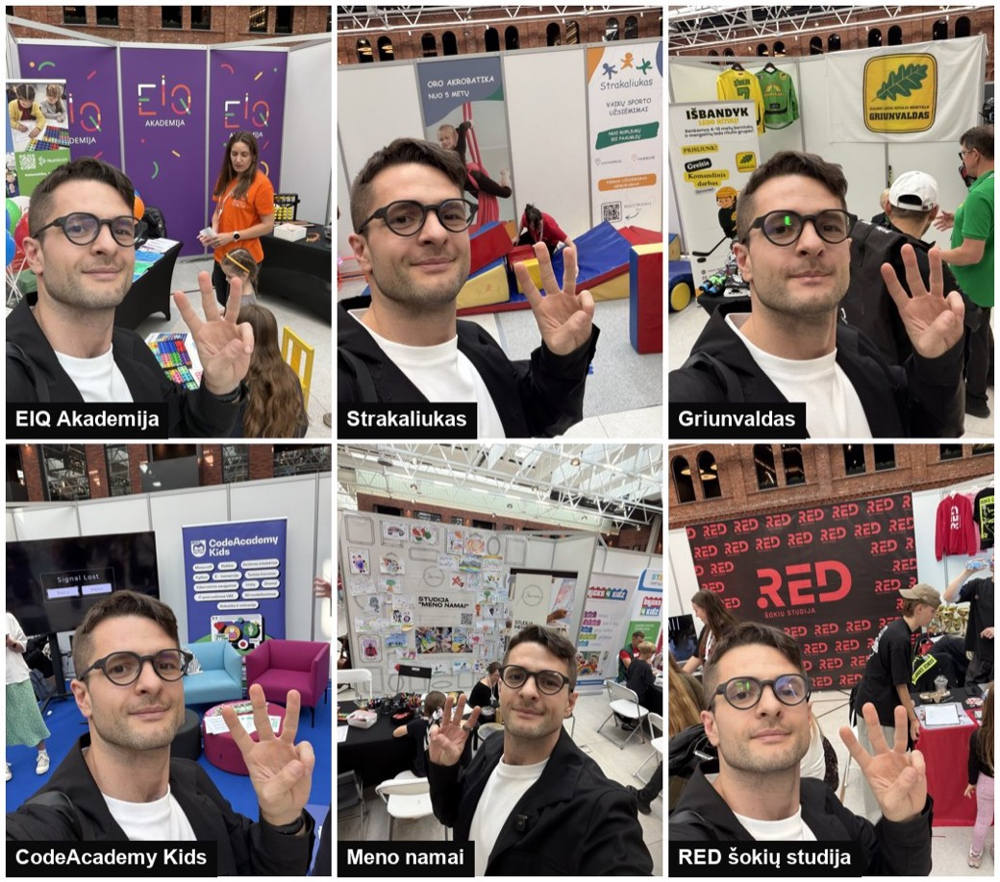

Kris Vas · laiškas tėvams · #03 · 2026-09
Ko labiausiai nori vaikas?
Tas pats laiškas, tik balsu. Skaito mano balso klonas (ElevenLabs), ne aš pats. 3,5 minutės.
🎧 Klausyk
⚗️ Eksperimentas: dirbtinis balsas gali suklysti tardamas vardą ar kirtį. Jei kas skambėjo keistai, parašyk man.
Būrelių mugė „Renkasi vaikai", PC Akropolis, Kaunas · 2026-09-19 · nuotrauka mano
🎬 „Labiausiai vaikas nori žmogaus"
Tėvų vebinaras „Veikla po pamokų", 2026-09-24. Nuo 49:37: Edita Pocinaitė-Janickė, o po jos mano pora sakinių. Visas įrašas 50 min. Vebinaras vyko Robotikos akademijos kanale; jos bendraįkūrėjas esu.

„Renkasi vaikai", Kaunas · šeši iš stendų, ne reitingas · sąrašas laiške
🎬 Interviu serija su būrelių įkūrėjais
Pirmas: RED šokių studija, „Iš medinio vaiko į trenerį". Daugiau: mano YouTube.
🤖 Pasikalbėk su mano AI agentu
Agentas mano balsu apie būrelius: kaip rinktis, ko klausti, į ką žiūrėti. Tai dirbtinis intelektas, ne aš, ir jis gali klysti. Pasikalbėk čia →
Tekstas
Labas. Čia Kristijonas, tiksliau, mano balso klonas. Skaitau trečią laišką tėvams. Tema: ko labiausiai nori vaikas.
Ketvirtadienį vedžiau pirmą savo tėvų vebinarą. Iki paskutinės minutės galvojau, kad jis neįvyks. Buvau rimtai įsitempęs, nes darau tai pirmą kartą. Bet viskas susidėliojo. Užsiregistravo apie trys šimtai tėvų, gyvai vienu metu žiūrėjo iki šimto septyniasdešimt vieno. Kokybe esu labai patenkintas. Ir tai tik pirmas iš daugelio.
Svečiuose buvo dvi: kibernetinės psichologijos analitikė Edita Pocinaitė-Janickė ir verslininkė, mama Marija Valaitė. Editos mintys man patiko labiausiai. Pabaigoje ji pasakė sakinį, kurį nešiojuosi iki šiol.
„Labiausiai, pasakysiu, vaikas nori žmogaus. Kas ves tą būrelį. Koks tas žmogus."
Pagalvok dabar: kas buvo tavo žmogus? Tas, kurį prisimeni iki šiol.
Mano buvo keramikos mokytoja Lena. Ką tik nulipdydavau, ji sakydavo, kad tai nuostabu, kad esu tikras skulptorius ir turėčiau juo tapti. Skulptoriumi netapau. Bet jos žodžiai liko su manim iki šiol.
Todėl, kai ruošiu mentorius, kartoju vieną dalyką: girk pastangas, ne tik rezultatą. Carol Dweck tyrime penktokai, pagirti už pastangas, po nesėkmės ilgiau nepasidavė ir dirbo geriau nei tie, kuriuos pagyrė už protą. Tai vadinama augimo mąstysena.
Aš su Edita sutinku. Dirbtinis intelektas jau žino viską, kas parašyta vadovėlyje. Kartais primeluoja, bet dažniau ne. Ko jis neturi, tai patirties. Jis niekada nenukrito nuo riedlentės. Nejautė, kaip dreba rankos prieš pirmą pasirodymą scenoje.
Mes įeinam į tikrų patirčių erą. Žmonės vėl nori tikrų žmonių, tikrų patirčių ir tikrų iššūkių. Ekranų laiko vien draudimu nenugalėsi. Jį reikia pakeisti kažkuo geresniu. Todėl manau, kad būreliai yra dvidešimt pirmo amžiaus priešnuodis. Ten vaikas sutinka žmogų, kuris tai išgyveno pats.
Harvardo vaiko raidos centras rašo, kad vaikai, kurie gerai išsilaiko nepaisant sunkumų, turėjo bent vieną stabilų ir įsipareigojusį suaugusįjį šalia. Vieną. Tai gali būti mama. Gali būti treneris ar keramikos mokytoja.
Mano mėgstamiausias triukas: iš ekrano į tikrą gyvenimą. Sužinok, ką vaikas myli ekrane, ir perkelk tai į tikrą gyvenimą. Kartu su juo. Mėgsta lenktynių žaidimą? Važiuokit į kartingus. Mėgsta Minecraft? Statykit tikrą tvirtovę, namie iš pagalvių ar lauke iš šakų. Nenustygsta vietoje? Batutų parkas. Domėkis savo vaiku. Tegul jis pamato, kad tikras gyvenimas įdomesnis už skaitmeninį.
Praeitą šeštadienį buvau Kaune, būrelių mugėje „Renkasi vaikai". Ėjau nuo stendo prie stendo ir žiūrėjau į žmones, ne į plakatus. Visų teikėjų sąrašą su nuorodomis rasi laiške, sugrupuotą pagal tai, ko reikia vaikui, be reitingo. Sąžiningai: Robotikos akademiją ir ExoClass esu bendrai įkūręs, tai irgi parašiau laiške.
Pradedu interviu seriją su būrelių įkūrėjais. Pirmas: RED šokių studija, apie vaiką be ritmo, kuris po devynerių metų tapo treneriu. Nuoroda į mano YouTube kanalą yra laiške.
Ir naujiena. Statau AI agentą, su kuriuo gali pasikalbėti mano balsu apie būrelius. Tai dirbtinis intelektas, ne aš, ir jis gali klysti. Pabandyk ir įvertink vienu paspaudimu laiške.
Trys žingsniai šiai savaitei. Pirma: prie vakarienės paklausk, kuris suaugęs vaikui būrelyje ar mokykloje patinka labiausiai, ir kodėl. Antra: rask vieną dalyką, kurį vaikas myli ekrane, ir savaitgalį padarykit jį tikrai. Kartu. Trečia: papasakok vaikui apie savo žmogų.
Parašyk man: kas buvo tavo žmogus? Ir kas šiame laiške patiko, ką sužinojai, apie ką nori daugiau. Skaitau viską.
Ačiū, kad prisijungei. Iki kitos savaitės!
Kas buvo tavo žmogus? Ką sužinojai, apie ką nori daugiau? Atsakymas ateina tiesiai man. Skaitau kiekvieną.
Atrašyk man →⚗️ Šį puslapį ir laišką kūriau su dirbtiniu intelektu; jis gali klysti. Esu Robotikos Akademijos, BrAIn Club ir ExoClass bendraįkūrėjas. Būrelių sąrašas laiške be reitingo, su interesų atskleidimu; vebinaras vyko Robotikos akademijos kanale. Visi nemokami įrankiai tėvams: krisvas.lt